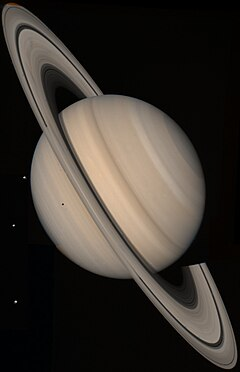

زحل یا کیوان[۵] (به انگلیسی :saturn)، بعد از سیارهٔ مشتری، دومین سیارهٔ بزرگ منظومه شمسی و ششمین سیارهٔ نزدیک به خورشید است. زحل یک گلولهٔ گازی غولپیکر است که با وجود حجم زیادش تنها ۹۵٫۱۵۹ برابر زمین جرم دارد. چگالی این سیاره حدود یکهشتم زمین و کمتر از آب است. یک روز کامل در زحل برابر ۱۰ ساعت و ۳۹ دقیقه در زمین و یک سال آن ۲۹٫۵ برابر سال زمین است. از آنجایی که مدار استوایی زحل تقریباً همانند زمین در ۲۷ درجه است، تغییرات زاویهٔ سیاره نسبت به خورشید شبیه به زمین است و در این سیاره نیز همان چهار فصل مشاهده میشود. جرم این سیارهٔ همانند مشتری از گاز است که بیشتر آن را هیدروژن تشکیل میدهد. میزان اندکی هلیوم و متان در ردههای بعدی گازهای تشکیلدهندهٔ سیاره قرار دارند. در آسمان شبِ زمین، زحل به دلیل اندازهٔ بزرگ، نسبتاً درخشان دیده میشود. زیبایی آسمان زحل به خاطر نوارهای روشن حلقههای اطراف آن و نیز به خاطر قمرهای زیادش است. به علت سرعت حرکت زحل به دور خود در قطبهای آن نوعی حالت پخی مشاهده میشود که سیاره را از شکل کرهٔ کامل دور میکند. سیاره زحل از جنبههای زیادی شبیه مشتری است، جز اینکه در اطراف آن چندین حلقهٔ شگفتانگیز وجود دارد. زحل از دوران باستان شناخته شده و به عنوان خدای کشاورزی و ثروت در اساطیر روم نامیده شده است.
زحل کمی از مشتری کوچکتر است و جرم آن کمتر از جرم مشتری و در حدود ۹۵ برابر جرم زمین است. زحل سومین جسم در سامانهٔ خورشیدی بر پایهٔ جرم و حجم میباشد. زحل یک غول گازی است زیرا سطح آن به صورت کلی از گاز تشکیل شده است با اینکه ممکن است دارای یک هستهٔ جامد باشد.[۶] زحل کمترین میانگین چگالی را نسبت به سایر سیارات سامانه خورشیدی دارد. اگر بتوان زحل را در دریایی عظیم انداخت این سیاره بر روی آب شناور میماند. اندازهٔ شعاع این سیاره در منطقههای استوایی با مقدار آن در قطبها نزدیک به ۱۰٪ متفاوت است؛ ۶۰٫۲۶۸ کیلومتر در برابر ۵۴٫۳۶۴ کیلومتر.[۳] درون زحل میتواند ترکیب مشتری را داشتهباشد. برآوردهای نظری مقدارهایی حدود ۷۴٪ هیدروژن، ۲۴٪ هلیوم، ۲٪ عناصر سنگینتر را پیشنهاد میکند. این ترکیب تقریباً مشابه ترکیبات خورشید است. گمان میرود زحل دارای یک هستهٔ سنگین کوچک به قطر ۲۰ هزار کیلومتر و جرمی معادل ۲۰Mφ باشد.
صفحه بعد صفحه قبل